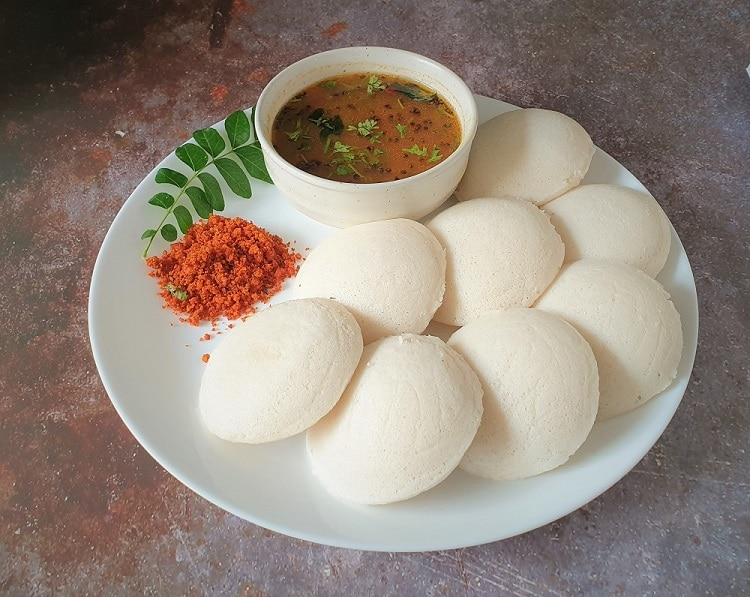

Idli

Category: Breakfast
Prep Time: 10 mins (plus fermentation) | Cook Time: 10-12 mins
Servings: 4
Ingredients
- 2 cups Rice
- 1 cup Urad dal (black gram)
- 1/2 tsp Fenugreek seeds (optional)
- Salt to taste
- Water as needed
- Oil for greasing
Instructions
- Wash and soak rice and urad dal (with fenugreek) separately for 4–6 hours.
- Grind dal to a smooth batter, then grind rice to a slightly coarse batter.
- Mix both batters, add salt, and let it ferment overnight or for 8 hours.
- Grease idli moulds and pour the batter into them.
- Steam in an idli steamer for 10–12 minutes until a toothpick comes out clean.
- Let them cool slightly and remove from moulds.
- Serve hot with sambar and coconut chutney!
Leave a Review